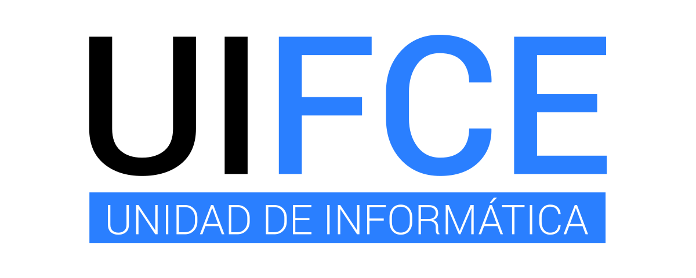
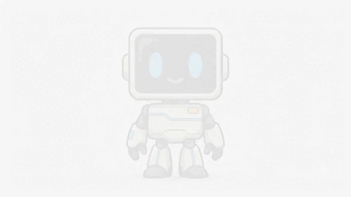

Empalme Genially
Resumen del manual de uso para arrancar rápido con la herramienta.
Tipos de diseño y su uso en la UIFCE



Del propósito inicial a nuestra proyección futura
Estructura de la Unidad de Informática y el rol estratégico de Virtualización Académica:
Filtra los proyectos por semestre para ver cómo ha evolucionado el área.
Resumen visual de la guía de primeros pasos: cómo se virtualiza un curso, quién hace qué y qué buenas prácticas seguimos.
Lo que se ha trabajado y se trabaja. Cada tarjeta enlaza a sus recursos.
Resumen del manual de uso para arrancar rápido con la herramienta.
Los colores suaves y armoniosos no son solo una preferencia estética; son un requisito ergonómico para tu cerebro. Reducen la fricción visual, evitan el secuestro de tu atención y liberan toda tu capacidad cognitiva para la tarea de aprender.
Definir objetivos mediante verbos de acción preprograma el cerebro del estudiante, transformando el consumo pasivo de contenido en una búsqueda cognitiva activa que maximiza la atención y la retención a largo plazo.
La conclusión le quita un peso de encima a tu memoria de trabajo, mientras que la recompensa inyecta el combustible químico (dopamina) necesario para que quieras repetir el proceso. Es diseño conductual en su máxima expresión.
Organizadas por tarea: busca lo que necesitas hacer, no el nombre de la app.
Logos de la UIFCE y estados de Uifcito. Haz clic para descargar.
Material de referencia para no reinventar cada semestre.
Mapa del dominio del área en Google Drive. Haz clic en cada carpeta para ver su contenido.
Términos clave utilizados frecuentemente en los procesos de Virtualización Académica.